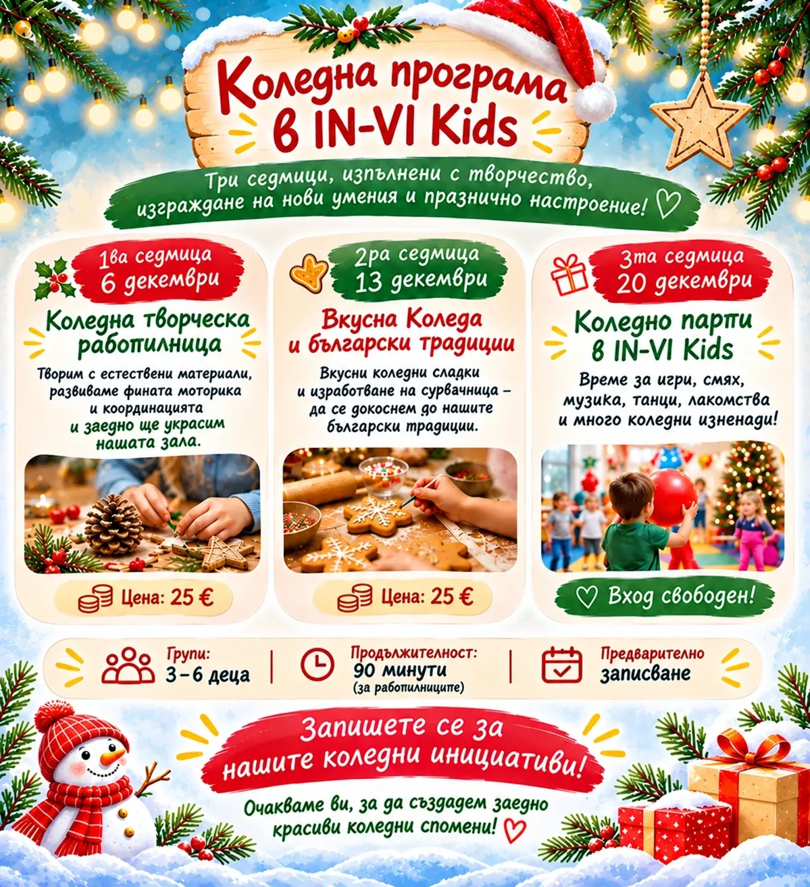
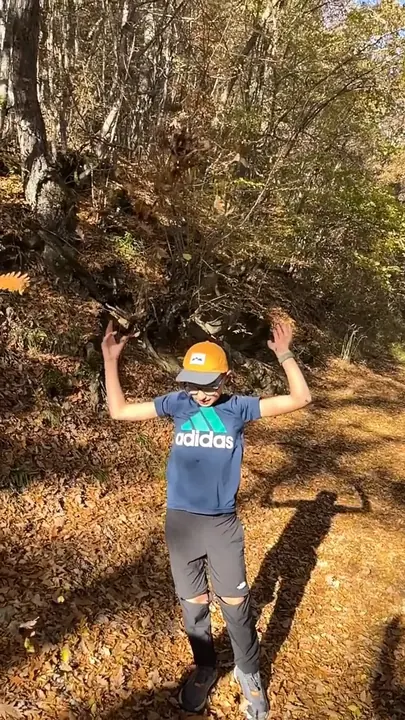
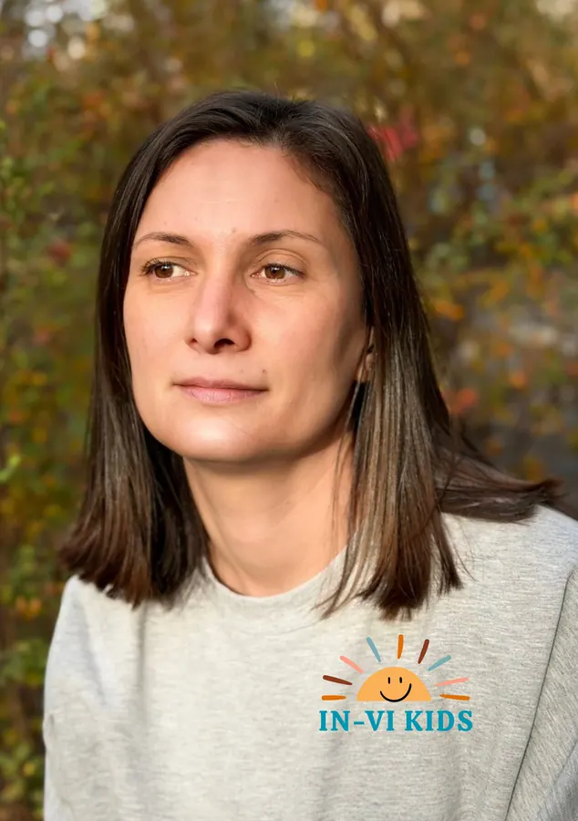
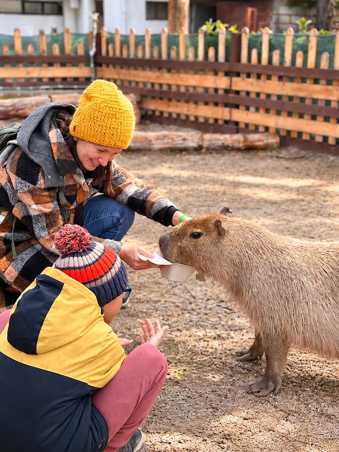

Свят от възможности за всяко дете.
Всяко дете има свой път на развитие.
Целта ни е да създадем среда и да подберем подходи,
които му дават увереност да изследва света и да разгърне своя потенциал

Какво е ерготерапия?
Ерготерапията подкрепя детето в развитието на умения, които са му нужни, за да участва
по-уверено и самостоятелно в ежедневието – в играта, ученето, самообслужването и общуването.
В използваме различни терапевтични методи, практически задачи и разнообразни
предизвикателства,
чрез които създаваме възможности за изследване, преодоляване на трудности и усвояване на нови умения.
Всяко
занимание е съобразено с индивидуалните потребности, възрастта и силните страни на детето.


ЗА НАС
Историята на Ина и Влади – детето, което вдъхнови
създаването на .
„ се роди от личен опит и от вярата, че всяко дете заслужава да бъде разбрано, подкрепено и прието такова, каквото е.“
Ина – майка, съпруга и ерготерапевт
Аз съм човек, който знае какво означава да търсиш отговори за своето дете. Вярвам, че развитието не се случва само в терапевтичната зала, а и в играта, движението, ежедневните дейности и всички онези малки преживявания, които съпътстват детето всеки ден.
Завършила съм маркетинг и дълго време работих в тази сфера. С ерготерапията се срещнах, когато заведох Влади в терапевтична зала. Бях впечатлена от начина, по който ерготерапията достига до детето – чрез игра, движение и доверие. Това ме накара да погледна на развитието по различен начин и да избера нов професионален път.
Днес съм дипломиран ерготерапевт с повече от 2 години професионален опит и продължавам да надграждам знанията си чрез специализирани обучения и сертификационни курсове. Като ерготерапевт съм част и от екипа на „Местенцето“, където работя с деца и техните семейства. За мен всяко дете е различно и именно затова подходът към него трябва да бъде индивидуален.
Допълнителни квалификации:
- MNRI® Dynamic and Postural Reflex Integration
- MNRI® Lifelong Reflex Integration
- DIR 101: An Introduction to DIR® and DIRFloortime®
Имам професионален интерес към човешките рефлекси и тяхната роля в развитието на детето, както и към подходи, които поставят играта, взаимоотношението и индивидуалните особености на детето в центъра на работата.
УСЛУГИ
Как можем да работим заедно?
В предлагаме занимания, съобразени с индивидуалните потребности, възрастта и целите на всяко дете.
Консултация
Среща с родител за обсъждане развитието, индивидуалните потребности и ежедневните предизвикателства на детето. Заедно обсъждаме подходящи насоки за подкрепа и изготвяме индивидуален план за развитието на детето.
Индивидуална ерготерапевтична сесия
Индивидуална работа с детето, съобразена с неговите потребности, силни страни и конкретни цели. Чрез игра и подходящи за детето занимания развиваме уменията, необходими за по-голяма самостоятелност и участие в ежедневието.
Групови занимания
Занимания в малка група, в които чрез игра и преживяване развиваме умения за участие, взаимодействие и самостоятелност.
ВЯРВАМЕ ЧЕ:
Терапията трябва да бъде съобразена с детето, а не детето с терапията.
Ина Харалампиева, ерготерапевт
Как започваме?
Преди да започнем работа, отделяме време да разберем силните страни на детето, какво го затруднява и какви са очакванията на семейството.
След това извършваме оценка на развитието и заедно поставяме ясни и реалистични цели.
Няма универсален подход. Подбираме методите и дейностите според индивидуалните нужди на детето. Ако даден подход не носи желания резултат, променяме метода и търсим нови решения.
КАКВО РАЗВИВАМЕ
Умения, които помагат на детето да участва
по-пълноценно в своя живот
Груба моторика
Развиваме координацията, баланса и постуралния контрол, необходими за увереното и безопасно движение на детето. Насърчаваме умения като ходене, бягане, скачане, катерене, люлеене,хвърляне и хващане на топка, както и стабилността и равновесието и много други умения.
Фина моторика
Развиваме уменията за малки и прецизни движения на ръцете и пръстите, необходими за творчеството, детската градина, училището и ежедневието. Работим за умения като рисуване, оцветяване, рязане с ножица, лепене, нанизване, закопчаване на копчета, използване на прибори и писане.
Сензорна интеграция
Подкрепяме детето в обработването и организирането на информацията, която получава чрез сетивата си – допир, движение, звук, зрение и усещане за позицията на тялото в пространството. Това му помага да се адаптира по-лесно, да участва в играта, ежедневните дейности и да се чувства по-уверено в тялото и средата си.
Самостоятелност и ежедневни умения
Изграждаме уменията, които помагат на детето да се справя по-уверено и самостоятелно с ежедневните дейности – обличане, хранене, лична хигиена, организация и грижа за себе си и своите вещи.Целта е детето постепенно да се справя все по-уверено и самостоятелно с дейностите от ежедневието.
Умения за учене и подготовка за училище
Подкрепяме развитието на уменията, необходими за успешно участие в детската градина и училище – внимание и концентрация, следване на инструкции, графомоторни умения, подготовка за писане, организация и работа с учебни материали.
Социални умения и взаимодействие
Насърчаваме уменията за взаимодействие с другите – участие в група, редуване, споделяне, следване на правила, съвместна игра и изграждане на увереност в общуването с деца и възрастни.
НОВО В
Актуални инициативи и полезни теми.
Предстоящо
Коледно парти за децата на IN-VI Kids – време коледни вълшебства!
Каним всички деца на IN-VI Kids да отпразнуваме заедно най-вълшебното време от годината! Подготвили сме празнична среща, изпълнена с игри, забавления, музика, танци и много коледни изненади.
Очакват ни:
- Забавни групови игри и весели предизвикателства
- Балони, музика и танци
- Коледни изненади и подаръци
- Вкусни лакомства и празнична почерпка
- Много усмивки, споделени моменти и коледно настроение
Място: IN-VI Kids
Дата: ще бъде обявена допълнително
Продължителност: около 90–120 мин.
Участие: без фиксирана такса.
Ще има кутия за доброволен принос – всеки може да остави сума по собствена преценка.
Запишете се, за да можем да подготвим незабравимо преживяване за всички деца!
Нека споделим празника заедно! 🎄
Актуално
🌿 27 октомври - Световен ден на ерготерапията
УЧАСТИЕТО ИМА ЗНАЧЕНИЕ. ЖИВЕЙТЕ АКТИВНО!
Днес, в Световния ден на ерготерапията, мотото „Участието има значение“ ни провокира да стартираме с нещо ново в — да ви насърчим да излезете от рутината на ежедневието и да откривате нови места заедно с децата си.
Разходките сред природата и посещението на непознати места са чудесен начин да опознаваме света около нас, да си подаряваме нови преживявания и да създаваме спомени заедно.
Терапията е важна подкрепа, но не бива да заема централно място в живота на детето. Тя е част от пътя.
Истинският живот се случва навън — сред природата, в общуването, в срещите с нови хора, места и предизвикателства.
Такива преживявания често изглеждат сложни, изискващи организация и планиране, а всъщност е достатъчно просто да тръгнем.
С тази инициатива искаме да ви вдъхновим да правите крачки извън обичайното ежедневие и да търсите възможности за децата си да участват в колкото може повече интересни за тях неща.
А ние ще споделяме с вас наши подобни преживявания, открития и идеи за повече време навън. 🌿
УЧАСТИЕТО ИМА ЗНАЧЕНИЕ. ЖИВЕЙТЕ АКТИВНО!
Повече за инициативата тук.
Полезно
Какво всъщност развиваме в ерготерапията?
Не работим само за едно умение. Работим за участието на детето в неговия живот.
Фината и грубата моторика, балансът и координацията, вниманието, моторното планиране, сензорната преработка, зрително-моторната координация, социалните умения и самостоятелността са умения, които имат смисъл, когато помагат на детето да участва по-уверено в ежедневието.
Терапията започва в кабинета, но промяната се случва всеки ден – у дома, в детската градина, в училище, в играта и в реалните преживявания.
ОТЗИВИ ОТ РОДИТЕЛИ
Думите, да, те са най-ценната обратна връзка за нас.
★★★★★
Човек, който работи от сърце и с мисия в подкрепа на децата. Личната ѝ кауза личи във всичко, което прави, и ѝ дава енергията, която всеки специалист в тази област трябва да притежава!
Свилен Дечев★★★★★
„Страхотен специалист! Спокойна, внимателна, с позитивно излъчване, изслушвате и ми дава адекватни насоки. Отделя необходимото време и работи активно с детето ми. Обяснява всичко спокойно и на разбираем език. Препоръчвам!!!“
Теодора Стамболийска★★★★★
„Много сме доволни от In Vi Kids и най-вече от Ина! Тя е страхотен специалист. Наистина разбира от какво имат нужда децата със СОП и много помага и на мен да ги разбирам по-добре. Много слънчев, спокоен и позитивен човек. Има нещо магично в начина, по който работи с децата, истинска Мери Попинс за нашите специални деца. Препоръчвам мястото с две ръце!"
Ивета Иванова★★★★★
„Препоръчвам Ина и IN VI KIDS с две ръце! Дъщеря ми ходи с огромно желание на терапия и няма търпение за всяка следваща среща. Ина подхожда със сърце, отговорност и професионализъм към децата! Радваме се, че животът ни срещна с нея! ❤️“
Росица ГеоргиеваИскате да споделите своя опит с ?
★ Остави отзив в Google